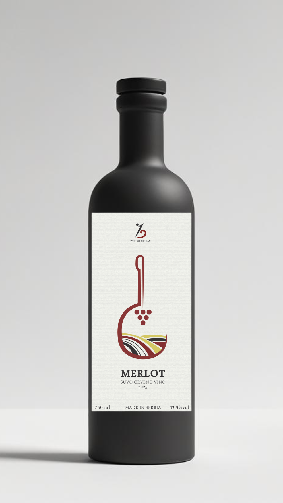
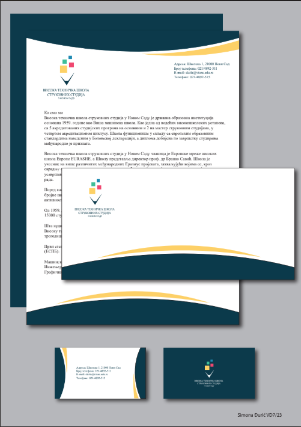
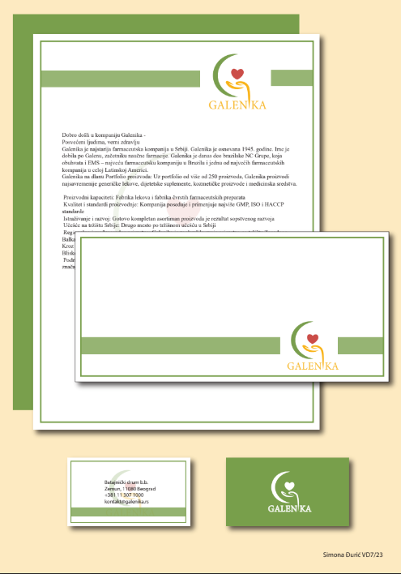
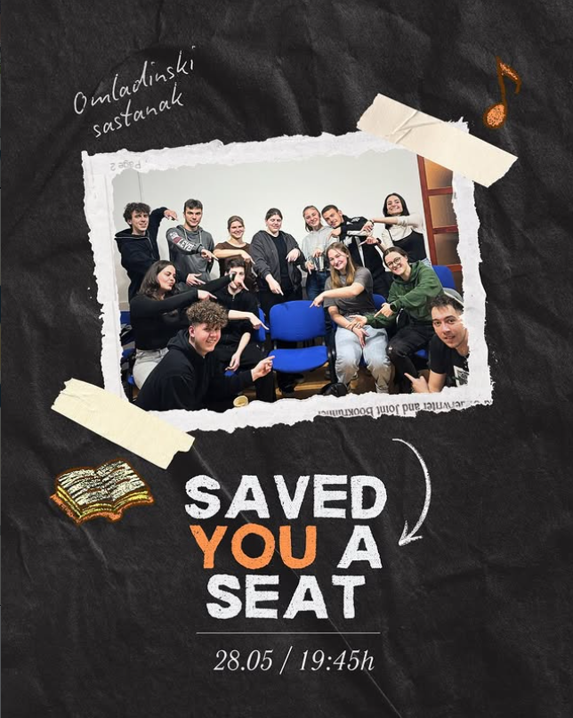
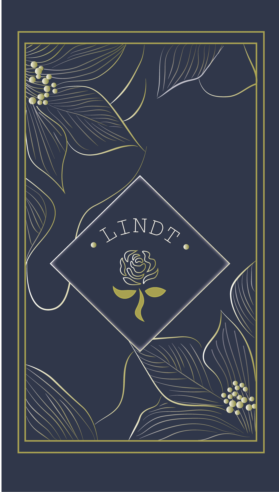
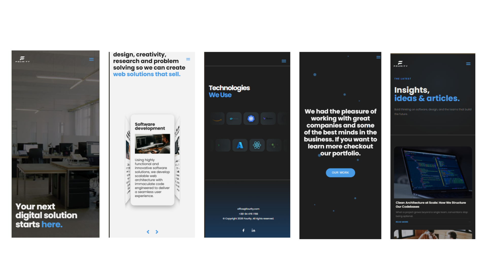

My latest projects

Zvonko Bogdan — Academic Project
Brand Identity · Packaging · Logo Design
Adobe Illustrator
Visual Style: The design centers around a clever vector illustration that seamlessly blends the silhouette of a tamburica (a traditional regional folk instrument) with stylized vineyard landscapes and a grape motif. Paired with refined typography and a restrained color palette, the label delivers a sophisticated, high-end look tailored for contemporary design enthusiasts.
.png)
Fabrizia Limoncello Spritz — Academic Project
Brand Identity · Packaging · Logo Design
Adobe Illustrator
Concept & Objective: A student project with full creative freedom to redesign any canned beverage. The choice was Fabrizia Limoncello Spritz, shifting its visual identity toward a fun, energetic vibe that captures the essence of summer nightlife, music, and social gatherings.
Visual Style: The design transitions the product into a sleek, dark-themed can contrasted by playful, vibrant neon-like outline illustrations of citrus fruits. This combination of a dark backdrop and pops of color mimics glowing neon lights in the dark, giving the traditional Italian drink a fresh, youthful, and contemporary nightlife appeal.

VTŠNS — Academic Project
Brand Identity · Logo Design
Adobe Illustrator
Concept & Objective: Developed as a practical assignment for the Higher Technical School of Professional Studies in Novi Sad (Visoka tehnička škola strukovnih studija), this project focuses on a comprehensive rebranding and stationary design. The primary goal was to modernize the institution's visual identity, replacing rigid traditional formatting with a sleek, contemporary corporate aesthetic.
Visual Style: The redesign establishes a cohesive corporate ecosystem, applying a unified layout across a letterhead (memorandum), corporate envelope, and double-sided business cards. The design introduces dynamic, sweeping wave accents in deep teal and gold, creating a balanced frame for the clean, pixel-inspired modern logo. The elegant typography and structured grid system successfully shift the school's administrative materials into a professional, corporate-level presentation.

Galenika — Academic Project
Brand Identity · Logo Design
Adobe Illustrator
Concept & Objective: This project focuses on a comprehensive visual identity and stationery redesign for Galenika, one of the oldest and most prominent pharmaceutical companies in the region. The goal was to develop a refreshing, approachable, and trust-inspiring brand presence by restructuring their administrative and promotional materials into a unified corporate ecosystem. Visual Style: The design identity revolves around a soothing, health-centric palette of sage green and soft gold, evoking nature, care, and well-being. The stationery suite—comprising a corporate letterhead, a matching envelope, and double-sided business cards—utilizes a clean geometric layout with a distinctive horizontal block accent. This structured presentation framing a modernized, organic logo gives the historic pharmaceutical brand a clean, gentle, and highly professional contemporary feel.

Youth Group
Canva
Instagram Content Creation

Youth Group
Canva
Instagram Content Creation

Lindt Chocolate Packaging — Academic Project
Brand Identity · Packaging
Adobe Illustrator
Concept & Objective: Developed as a classroom assignment, this project focuses on a premium repackaging concept for Lindt chocolate. The objective was to elevate the brand's visual identity, moving it toward an ultra-elegant, luxurious aesthetic that positions the product as a high-end, sophisticated gift.

Foto Benka
Print Design · Design for Photo Studio · Commercial Project
Adobe Illustrator, Photoshop, Canva
Concept & Objective: Commissioned by a photo studio, this project involved creating a cohesive line of promotional merchandise—including t-shirts, tote bags, and mugs. The brief was to develop souvenir designs that celebrate local culture by incorporating traditional Slovak folk motifs, regional architecture, and cultural heritage.
Visual Style: Blending cultural folklore with modern product design, featuring folk illustrations and colorful graphic depictions of traditional Slovak attire and architecture. The results are charming, culturally rich, and highly wearable souvenirs that bridge community pride with daily-use items.

Foto Benka Website ↗
Web Design · Development
Figma, Wordpress
Visual Style: The design leans into a clean, modern, and image-centric minimalist style engineered to let the high-quality photography take center stage. Built with structured grid layouts, elegant typography, and plenty of breathing room (negative space), the interface creates an upscale digital experience. By matching an intuitive, seamless user experience with a polished artistic presentation, the layout positions the studio as both a professional business and a premium creative brand.
Technical Execution: Built on WordPress, the site bypasses rigid pre-made themes in favor of complete code control. By integrating the Advanced Custom Fields (ACF) plugin, the backend was engineered to map custom data structures directly to custom-coded templates. This allows the client to effortlessly update gallery images, pricing tiers, and project descriptions through tailored dashboard fields, keeping the interface highly dynamic while preserving design integrity.
Foto Benka Video
Video Production · Content Creation
Canva, Adobe Premiere
Concept & Objective: This project focuses on high-energy video content created for social media. I was responsible for both filming and editing these videos, shifting the brand's visual identity toward a fun, energetic vibe that captures the essence of summer nightlife, music, and social gatherings.
Visual Style: The video production transitions the product into a sleek, dark-themed environment contrasted by dynamic lighting and quick cuts. This combination mimics glowing neon lights in the dark, giving the traditional Italian drink a fresh, youthful, and contemporary nightlife appeal tailored for maximum engagement.

Fourity
Figma, WordPress, HTML5, CSS3, Java Script
Concept & Objective: This project presents a complete responsive mobile redesign for Fourity, a digital solutions and software development company. The main objective was to phase out an outdated interface in favor of a striking, tech-forward aesthetic that immediately communicates innovation, engineering precision, and corporate authority to prospective B2B clients. Visual Style: The interface relies on a sophisticated "dark mode" base punctuated by electric blue gradients and clean white typography. The layout leverages modern UI elements—such as structured card carousels for services, interactive tech-stack grids, and bold, high-contrast hero statements. By establishing an elegant typographic hierarchy and generous spatial intervals, the redesign breathes breathing room into complex technical data, packaging the agency's services into an ultra-modern, elite digital experience.